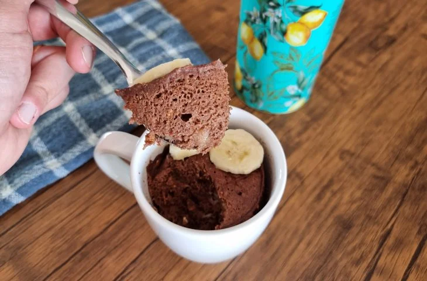

Brigadeiro fit com batata-doce
Quer aprender a fazer um brigadeiro fit com batata-doce , nutritivo
e que não irá prejudicar a sua dieta? Veja como fazer esta deliciosa sobremesa fit,
que poderá ser incluída em qualquer dieta, sem qualquer prejuízo!
Quindim fit
Passou na frente na padaria, viu um quindim e brilhoso lá na vitrine,
mas segurou a vontade de comprar? Nada de passar desejo em casa, com essa
receita de quindim diet você consegue se deliciar sem sair da dieta.
Bolo de Prestigio
Um bolo delicioso e superfácil de preparar. Essa versão do clássico
bolo de prestígio vai deixar você querendo mais. Confira!
Bolo de caneca de banana

Prático e muito rápido, esse bolo de caneca é perfeito para saborear quando bate
a vontade de comer uma sobremesa. Em 5 minutos você pode preparar um bolo delicioso,
fit e saudável.
Mousse de maracuja sem açucar

Bem simples, essa mousse de maracujá é uma ótima sobremesa para qualquer ocasião.
Na receita, o açúcar é substituído por xilitol e é ideal para quem deseja diminuir
o consumo desse ingrediente.
Sorvete de sensação fit
Quem adora a combinação de morango com chocolate, vai se deliciar com essa receita.
O preparo do sorvete é feito na batedeira, depois é só levar para o freezer e esperar gelar.
Mousse de abacate protoico
Essa opção de mousse de abacate te encantar pela praticidade.
Além disso é uma opção proteica, saudável e saborosa para sua sobremesa.
Pudim de banana